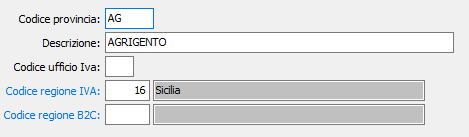
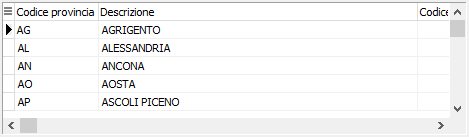

Province
La tabella di configurazione consente di memorizzare le province italiane, il corrispondente codice di ufficio Iva e la regione Iva, ai fini del controllo di esattezza dei numeri di partita Iva e per la stampa dei dati relativi alla dichiarazione Iva. La tabella viene comunque precaricata in sede di installazione procedura.
|
 Finestra di input in formato dettaglio |
|
 Finestra di input in formato tabella |
CODICE PROVINCIA: codice alfanumerico di 2 caratteri, corrispondente alla vecchia sigla automobilistica delle province italiane, per individuare la provincia in esame. Sul campo sono attive funzioni di ricerca sulla tabella stessa.
DESCRIZIONE: campo alfanumerico di 30 caratteri per contenere la descrizione della provincia in esame.
CODICE UFFICIO IVA: campo numerico per contenere il codice numerico dell’Ufficio Provinciale Iva competente per la provincia in esame.
CODICE REGIONE IVA: indica il codice della regione Iva a cui la provincia appartiene. E' utilizzata nella stampa del prospetto dati per la dichiarazione Iva per desumere la regione dalla provincia presente sul cliente.
CODICE REGIONE B2C: campo visibile solo se presente il modulo eCommerce B2C. Indica il codice della regione a cui la provincia appartiene. E' utilizzata per desumere la regione dall'inserimento, nell'area eCommerce B2C del web, della provincia e determinare la zona di consegna per il calcolo delle spese di trasporto.